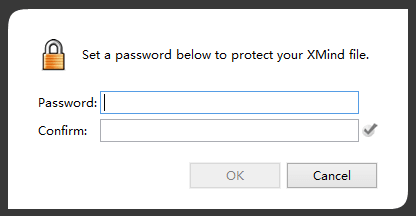
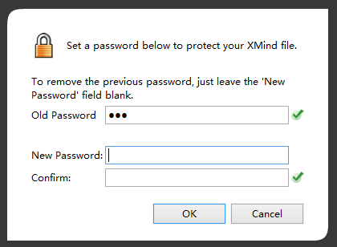

パスワードで暗号化
セキュリティは個人のプライバシーや企業の秘密に関係なく、常に重要な問題です。XMind Pro では、XMind ファイルをパスワードをロックできます。そして、情報に高度なセキュリティを与えることができます。
パスワードを設定する:- マップを、開くか作成します。
- メニューの[ファイル]→[パスワードで暗号化]を選択します。
- ダイアログに 2 回パスワードを入力し、[OK]ボタンをクリックします。

パスワードをリセット/削除する:- パスワードを入力して、パスワードが設定されているマップを開きます。
- メニューの[ファイル]→[パスワードで暗号化]を選択します。
- 古いパスワードを入力します。そして今 2 つのオプションがあります。
- 古いパスワードを削除する:[新しいパスワード]項目を空欄にして[OK]をクリックします
- パスワードをリセットする: 2 つの項目に 2 回新しいパスワードを入力する。

注: パスワードは慎重に保管してください。パスワードを忘れた場合そのファイルを開くことができません。